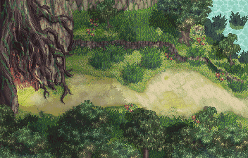

|
「前往火凌村」 ※剧情流程攻略※  告别了师傅，芷嫣和廷云开始向平牧城进发。走了不几日，两人来到了云山。忽然看到前方有一个大叔焦急的走来走去，两人上前询问后得知，原来他的母亲得了偏头痛的毛病，需要到前面的森林里找专门治疗偏头痛的药草，可是森林里有许多猛兽出没，他没有办法进入。两人答应帮忙寻找药草后，就动身进入了森林。在森林中的一处茂密的树叶中，两人找到了大叔需要的药草“蒲拿藤”，两人将药草拿给大叔，大叔非常感谢两人，送给两人一个“青玉手环”后就告别了两人。 芷嫣和廷云继续赶路，忽然发现在前方的路上躺着一个人。两人赶紧上前去救起此人，询问后得知此人叫阿福，是平牧城的居民，跟着平牧城主的医生沛陀一起进山采药，被怪物袭击，与医生沛陀走散了。他请求两人带上他一起去找沛陀医生，两人听说沛陀是平牧城主的医生，便答应带着阿福一起去找沛陀。 三人正走着，隐约闻见传来一阵异常的香味，三人走上前去观看，这时阿福提醒两人，发出香味的怪花就是袭击他们的怪物，叫两人小心。芷嫣和廷云慢慢接近怪花，果然怪花向两人发起了攻击，两人利索的消灭怪花之后，在怪花的根部发现一个包裹，阿福认出来那就是沛陀医生的包裹，就在阿福拾起包裹时，忽然在树的后面传来一阵救命的声音，三人前往查看。 芷嫣忽然发出一声尖叫“啊！！！” 平静的森林居然出现了怪物，沛陀大夫究竟遇到了什么？请期待下回的冒险。（第一章第三回结束） ※隐藏物品及隐藏剧情※ 阿扁所需的草药： ※迷宫地图※ |